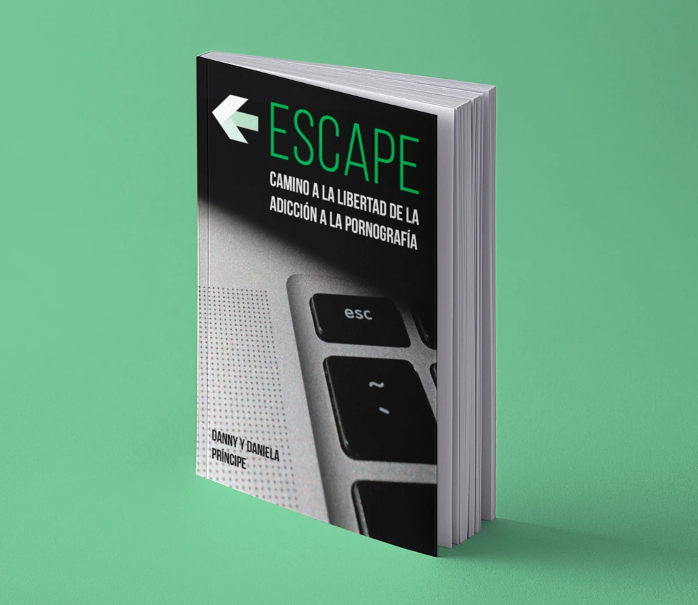
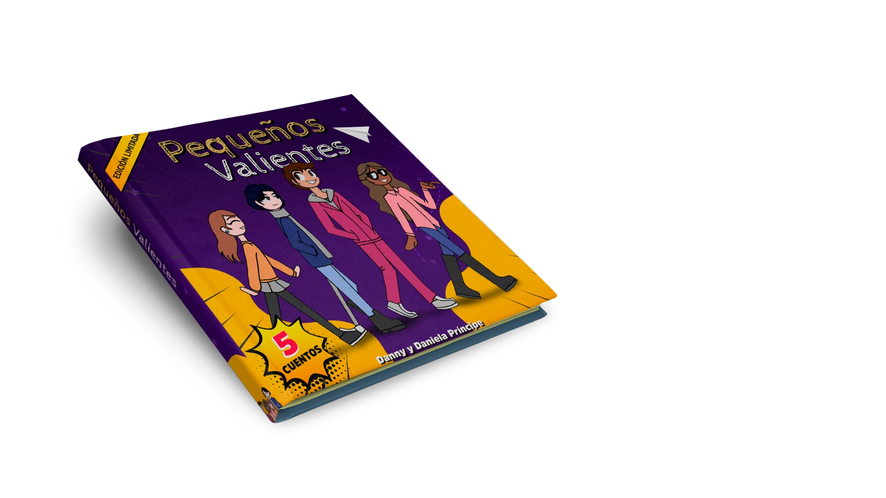

Una lectura para compartir
El amor vino y se quedó
Segunda edición, versión extendida. Consulta con nuestro equipo por los formatos disponibles.
Libros y recursos para seguir aprendiendo, conversar en familia y crecer en la fe.
Explora los librosPuedes consultar precios, formatos y disponibilidad con nuestro equipo. También encontrarás recursos para leer en PDF.
Segunda edición, versión extendida. Consulta con nuestro equipo por los formatos disponibles.

Una publicación de nuestros pastores. Conoce el libro y consulta sus formatos con nuestro equipo.

Un recurso sobre el camino a la libertad de la adicción a la pornografía, la pureza y la restauración en Jesús.

Identidad y prevención del abuso infantil para acompañar a los niños.
Escríbenos para conocer las opciones disponibles y cómo conseguir tu ejemplar.
Consultar por WhatsApp